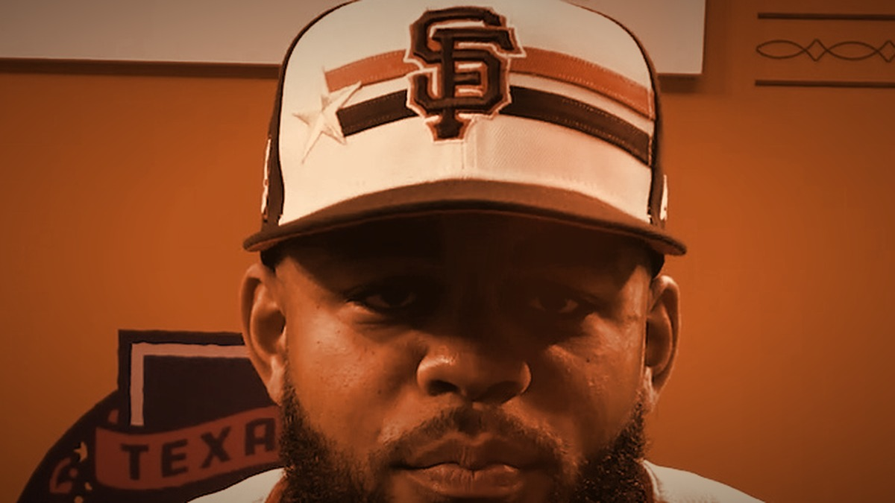
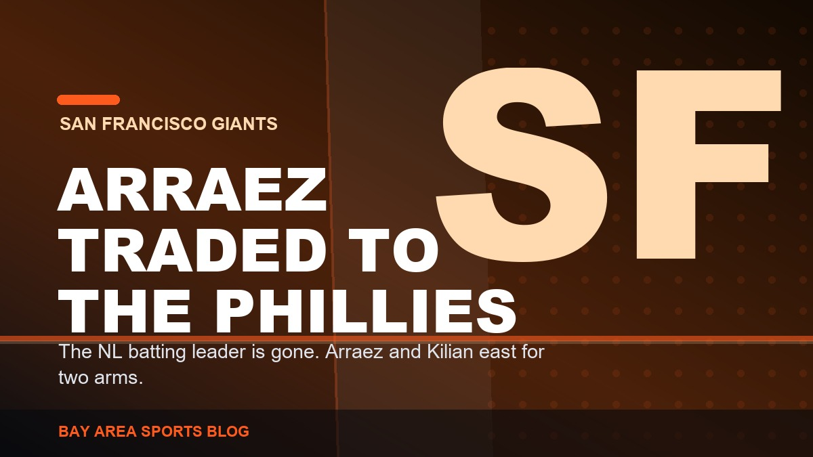
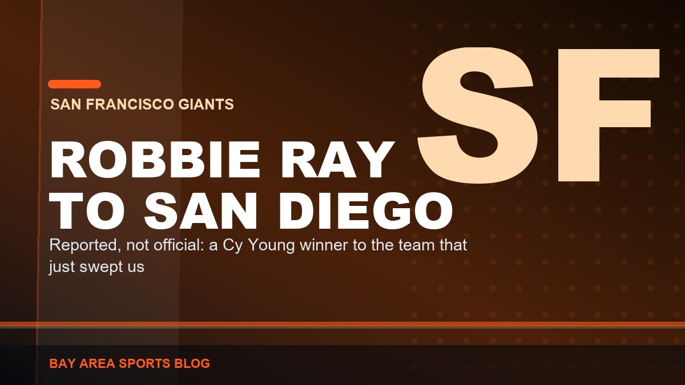

Latest in Giants
Giants 5, Tigers 2: Devers Hit His 24th and Nobody Is Talking About the Year He Is Quietly Having
Two-run shot in the first, Adames went deep in the fifth, Jung Hoo Lee cleared the bases in the second. Devers has 24 homers, 27 doubles and 64 RBI and it has gone almost unmentioned.

The Giants Got Marcelo Mayer for a Reliever Who Walks Everybody. Explain That One, Boston.
The fourth overall pick in 2021, twenty-three years old, five years of control — for Erik Miller, a middle reliever who walked sixteen percent of the hitters he faced. On paper this is a robbery.

Rangers 6, Giants 0: Eleven Left On Base, Zero for Eight With Runners in Scoring Position
Shut out by a pitcher making his first start since September 2024. Eleven runners stranded. Nineteen games under .500 for the first time all season.

Tony Vitello Has No Idea What He Is Doing With This Lineup, and Bryce Eldridge Batting Leadoff Is the Proof
Sixty different batting orders in seventy-seven games. Eight different leadoff hitters. And now the 21-year-old middle-of-the-order bat is hitting first. This is why they never get in a groove.

Rangers 5, Giants 4: Vitello Sat Eldridge, Eldridge Tied It Off the Bench, and They Lost Anyway
Bryce Eldridge never started, then tied the game with a pinch-hit two-run single in the ninth. Ezequiel Duran's second double of the night dropped on the warning track and Texas walked it off. 48-66.

Heliot Ramos Is a Yankee: The Rest of the Selloff We Have Not Talked About
Ramos to New York for two prospects, Erik Miller to Boston for Marcelo Mayer, Mahle to Atlanta. Five trades in a day, and we shipped the one player we actually developed.

Arraez Is Gone: The Best Hitter We Had Is a Phillie Now
Arraez and Kilian to Philadelphia for Ramon Marquez and Marty Gair. The National League batting leader, the only at-bat in this lineup I trusted, is on a plane east.

Robbie Ray to the Padres: Of Course It Is the Padres
Nothing is official yet, but the word is out. A Cy Young winner on an expiring deal, headed to the team that just swept us out of Petco. I asked for the teardown. It still stings.

Padres 5, Giants 4: Swept in San Diego, and the Deadline Is Tomorrow
Landen Roupp walked four in a four-run second, the Giants cut it to one three separate times and never got even, and San Francisco left Petco Park 0-3. They are 47-65 and 21-37 on the road.

Padres 6, Giants 5: Basabe Tied It Off a 103-MPH Fastball, and the Ninth Threw It Away
A guy playing his third game of the season drove in four, the Giants tied it in the eighth against a man throwing 103, and then gave it right back. 47-64, and 21-36 on the road.

Monday's Deadline Is the Only Interesting Thing Left About This Season
Forty-seven and sixty-four. Ramos on the block, Lee reportedly staying, Arraez and Ray on expiring deals. If Posey does not tear it down Monday, he never will.

Padres 7, Giants 0: Two Hits. Two. That Is the Whole Night.
Carson Whisenhunt could not get out of the fourth and the lineup managed two hits in nine innings. The good feeling from Thursday lasted exactly a day.

The Giants Are Playing Their Best Baseball of the Season, and the Brewers Series Just Proved It
3-2 over the last five games, with two wins over the MLB-best Brewers including a 16-3 rout. This is the best the Giants have looked all year.

Giants 16, Brewers 3: The Offense Finally Erupted, and It Was Glorious
Seventeen hits, a seven-run sixth, and Daniel Susac's first two career homers bury the MLB-best Brewers. Ramos and Arraez add four hits apiece, Webb wins. Giants take the series, improve to 46-62.

Brewers 8, Giants 2: Landen Roupp Never Found It, Bryce Eldridge's Homer Was the Only Answer
Roupp can't escape the fourth, Logan Henderson is nearly untouchable, and Milwaukee piles up 13 hits. Eldridge's eighth-inning homer is the only answer. Giants fall to 45-62.

Giants 3, Brewers 0: Tyler Mahle and Grant McCray Shut the Best Team in Baseball Down
Tyler Mahle throws six shutout innings, Grant McCray's two-run homer does the rest, and the Giants blank the 66-win Brewers at Oracle Park. Giants improve to 45-61.

Angels 4, Giants 3: Mike Trout Ruins the Sweep, Whisenhunt Gets Rocked
Trout goes 4-for-4 with two homers off him, Arraez's two-run ninth falls one out short, and the Giants fall to 44-61 after taking the first two of the series.

Giants 7, Angels 6 (F/10): Devers Does It Twice, and the Bullpen Nearly Ruins It Again
A first-inning homer, a tenth-inning walk-off single, and a blown two-run lead in between. Giants snap a five-game skid and move to 43-60.

103 Wins and Nothing to Show For It: The 1993 Giants and the Race That Forced Baseball to Invent the Wild Card
One game behind Atlanta with 103 wins and no playoff spot. The owners voted in the Wild Card that same September, one year too late for the best Giants team most of us ever saw.

Bryce Eldridge Keeps Impressing, and He Is the Only Future This Giants Team Has
A 21-year-old hitting .275 with a .368 on-base percentage, a .490 slug, 10 homers and 30 walks in 57 games. He is not a prospect anymore, he is the franchise first baseman.

Royals 5, Giants 4: We Finally Took a Lead, and It Lasted Half an Inning
Landen Roupp struck out seven over six, the Giants went ahead 3-2 in the seventh, and Kansas City answered with three. Swept, five straight, 42-60.

Royals 3, Giants 2: We Are Now Losing the Quiet Ones Too
Five hits, two runs in the fifth, and a bullpen inning that gave it all back. Mahle falls to 2-9, the Giants lose a fourth straight and sit at 42-59.

The Giants Lost the Series in Seattle, and the Fresh Start Lasted Exactly One Game
Eldridge homered 407 feet, Ramos drove in a run, and the Giants led 2-0 after one. Then Ray lasted four innings, the bats managed five hits, and Seattle took it 6-3 and the series 2-1.

The Giants Blew a 3-0 Lead to the Mariners, and I Am Sick of Writing This Column
Webb allowed two hits into the seventh, Devers and Adames homered, and it still ended Mariners 4, Giants 3 in ten. Cole Young's three-run homer and a walk-off sac fly. Same sickening story.

Casey Schmitt Is Having an All-Star Breakout Season, Even If the All-Star Game Didn't Notice
19 home runs, a .278 average with a .494 slug, a 118 wRC+, and top-20 NL production at four different positions. The best story on a bad Giants team, and the All-Star roster missed it.

Luis Arraez Got One Swing and Logan Webb Never Threw a Pitch at the 2026 All-Star Game
The AL shut out the NL 4-0 in Philadelphia. Arraez, hitting .330 and second in the NL in average and hits, struck out in his lone at-bat. Webb took the honor and protected the arm, and that was the right call.

Adames Grand Slam Powers Giants Past Mariners 7-0 to Open the Second Half
Willy Adames crushed his seventh career grand slam, Bryce Eldridge went deep, and Landen Roupp tossed seven shutout innings as the Giants blanked Seattle to start the second half with a statement.

Giants at the All-Star Break: 41-55, a Lost First Half, and a Rookie Manager Learning on the Job
Fourth in the NL West, 20.5 back, exactly where the doubters put a first-year college manager and a flawed roster. The honest first-half breakdown, Vitello's rookie half, and the reset coming August 3.

Tyler Mahle Finally Won a Game, and Casey Schmitt Made Sure It Counted
Seven innings of one-run ball from Mahle for his first win since April 22, a tiebreaking three-run homer from Schmitt, and a 4-2 win over Colorado at Oracle Park.

The Giants Bullpen Finally Held One: Erik Miller Slams the Door in a 3-1 Win Over the Rockies
The series opened with a sickening ninth-inning collapse, then the Giants won two straight. Trevor McDonald went seven, Willy Adames had three hits, and Erik Miller closed it without the bullpen blowing it for once.

The Giants Blew Another One, and It Is the Same Sickening Story
Two outs from beating the worst team in baseball, Caleb Kilian gave it all back. Rockies 4, Giants 3. Time to say the quiet part out loud about Vitello and Posey's leverage-free bullpen.

Rafael Devers Looks Wide Awake Again for the Giants
He went quiet for a few days, then drove another one out against the Rockies, his 19th of the season. The bat San Francisco paid for is back.

Giants vs Rockies, July 10: Ray Has to Bury Colorado, and Eldridge Is the Reason to Watch
The worst team in baseball is in town and Robbie Ray is going. Take care of business, and keep your eyes on the 6-foot-7 rookie splashing inside pitches into the Cove.

The Giants Might Actually Have Something in Carson Whisenhunt
Two starts, two wins for the rookie lefty. Schmitt, Eldridge and Adames all went deep in an 8-2 win over the Rockies. For once, a reason to watch.

This Giants Season Is Over. Build Around Bryce Eldridge and Explain the Bullpen.
At 35-49 and 17 back, the year is done. The future is Eldridge, and Posey's no-leverage bullpen makes no sense.

Dylan Cease Nearly No-Hit One of the Worst Giants Teams I Can Remember
Eight-plus hitless innings, a first-inning grand slam off Logan Webb, a 10-0 loss at home. This team is going nowhere.

The Giants Woke Up the Worst Offense in Baseball, and It Cost Them
Toronto had scored two runs in 27 innings. Trevor McDonald and the Giants handed them nine in a 9-3 loss.

Tony Vitello Was Not Ready to Manage in the Majors, and He Told Us So Himself
"I can't talk down to these guys." That one admission in his first week explains the whole season.

I Didn't Like the Tony Vitello Hire, and I'm Not Going to Pretend Otherwise
The Giants handed the manager job to a college coach with zero days of pro experience. Bold is not the same as smart.

The Giants Keep Promising October. Oracle Park Is Still Waiting.
San Francisco keeps building teams that are fine. Fine does not fill the ballpark in September.

Even-Year Magic: The Giants Dynasty of the Early 2010s
Three World Series titles in five years, in 2010, 2012, and 2014.

Bochy's October Wizardry and the Core Four Bullpen
Lopez, Casilla, Romo, and Affeldt posted a 1.14 ERA across three title runs. Nobody managed a bullpen better.

Barry Bonds: The Loudest Bat San Francisco Ever Saw
762 home runs, 73 in a single season, seven MVPs. The most feared hitter in baseball history wore orange and black.

103 Wins and No October: The 1993 Pennant Race and the Salomon Torres Gamble
The last great pennant race, Dusty Baker's final-day call on a 21-year-old rookie, and the 12-1 loss that ended it.

Jeff Kent: The MVP Nobody Had to Like
The 2000 NL MVP, the best-hitting second baseman ever, and the man who feuded with Bonds and still made it work.